SeqPlotR Elements: Primitives, Composites, and Ideograms
Source:vignettes/elements.Rmd
elements.RmdThis vignette is a visual catalogue of every drawable in SeqPlotR —
every primitive (seq_point, seq_line,
seq_segment, seq_curve, seq_path,
seq_poly, seq_area, seq_text),
every composite (seq_bar, seq_ribbon,
seq_density, seq_tile,
seq_lollipop, seq_gene,
seq_sequence), and the ideogram
(seq_ideogram). The later sections stitch them together
with multi-region windows and a patchwork layout so you can see what a
realistic mixed browser track looks like.
library(SeqPlotR)
#>
#> Attaching package: 'SeqPlotR'
#> The following object is masked from 'package:base':
#>
#> %||%
library(GenomicRanges)
#> Loading required package: stats4
#> Loading required package: BiocGenerics
#> Loading required package: generics
#>
#> Attaching package: 'generics'
#> The following objects are masked from 'package:base':
#>
#> as.difftime, as.factor, as.ordered, intersect, is.element, setdiff,
#> setequal, union
#>
#> Attaching package: 'BiocGenerics'
#> The following objects are masked from 'package:stats':
#>
#> IQR, mad, sd, var, xtabs
#> The following objects are masked from 'package:base':
#>
#> anyDuplicated, aperm, append, as.data.frame, basename, cbind,
#> colnames, dirname, do.call, duplicated, eval, evalq, Filter, Find,
#> get, grep, grepl, is.unsorted, lapply, Map, mapply, match, mget,
#> order, paste, pmax, pmax.int, pmin, pmin.int, Position, rank,
#> rbind, Reduce, rownames, sapply, saveRDS, table, tapply, unique,
#> unsplit, which.max, which.min
#> Loading required package: S4Vectors
#>
#> Attaching package: 'S4Vectors'
#> The following object is masked from 'package:utils':
#>
#> findMatches
#> The following objects are masked from 'package:base':
#>
#> expand.grid, I, unname
#> Loading required package: IRanges
#> Loading required package: Seqinfo
# Two genomic regions, used throughout for multi-window demos.
multi_win <- GRanges("chr1",
IRanges(start = c(1.0e6, 5.0e6),
end = c(3.0e6, 6.5e6)))
# Single-window convenience for the small element demos.
win <- GRanges("chr1", IRanges(1e6, 3e6))Primitives
Every primitive shares the same three-stage contract
(initialize → prep → draw) and
the same shorthand:
seq_<name>(map(...), aesthetics = aes(...)). What
differs is the map() vocabulary each one consumes.
Per-track data + mapping are inherited, so a
single seq_track() can host several primitives drawing from
the same table.
seq_point — one glyph per observation
Required map() fields: x, y.
Optional: color, fill, size,
shape, alpha.
xs <- seq(1.05e6, 2.95e6, length.out = 40)
point_gr <- GRanges("chr1", IRanges(xs, width = 1),
score = sin((xs - 1e6) / 5e5) + rnorm(40, 0, 0.12),
cat = sample(c("A", "B", "C"), 40, replace = TRUE))
seq_plot() %|%
seq_track(data = point_gr,
mapping = map(x = start, y = score),
windows = win) %+%
seq_point(map(color = cat),
aesthetics = aes(size = 0.7, alpha = 0.9)) -> p
p$plot()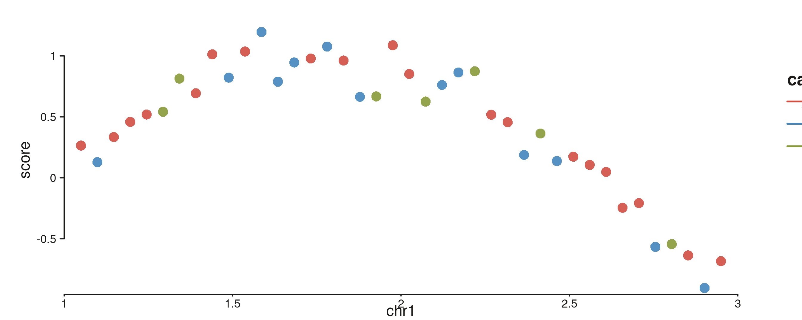
seq_line — connected line through points
Required: x, y.
aes(type = "step") switches to a step line (useful for
signal tracks that represent piecewise-constant values).
line_xs <- seq(1.05e6, 2.95e6, length.out = 100)
line_gr <- GRanges("chr1", IRanges(line_xs, width = 1),
signal = sin((line_xs - 1e6) / 3e5) * 0.4 + 0.5,
step = round(sin((line_xs - 1e6) / 3e5) * 2) / 4 + 0.5)
seq_plot() %|%
seq_track(track_id = "Smooth",
data = line_gr,
mapping = map(x = start, y = signal),
windows = win) %+%
seq_line(aesthetics = aes(color = "#205EA6", linewidth = 1.4)) %|%
seq_track(track_id = "Step",
data = line_gr,
mapping = map(x = start, y = step),
windows = win) %+%
seq_line(aesthetics = aes(color = "#AF3029",
linewidth = 1.4,
type = "step")) -> p
p$plot()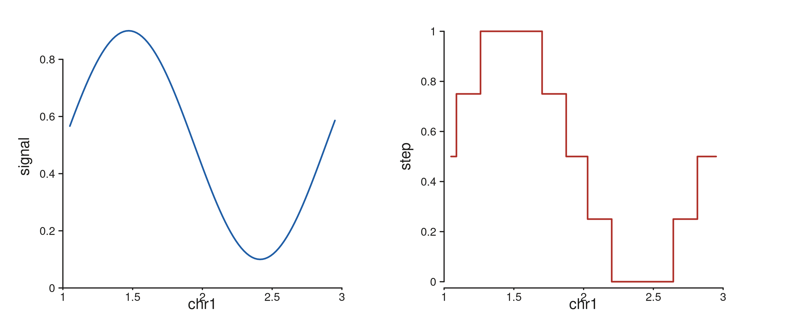
seq_segment — one straight line per row
Required: x, x_end, y,
y_end. Great for quick interval marks — a peak span, a read
pair, a Manhattan-style baseline.
seg_gr <- GRanges("chr1",
IRanges(start = seq(1.1e6, 2.9e6, by = 2.5e5), width = 1),
x_end = seq(1.1e6, 2.9e6, by = 2.5e5) + 1.5e5,
y = runif(8, 0.2, 0.6),
y_end = runif(8, 0.4, 0.9),
grp = rep(c("up", "down"), length.out = 8))
seq_plot() %|%
seq_track(data = seg_gr,
mapping = map(x = start, x_end = x_end,
y = y, y_end = y_end, color = grp),
windows = win) %+%
seq_segment(aesthetics = aes(linewidth = 2, alpha = 0.85)) -> p
p$plot()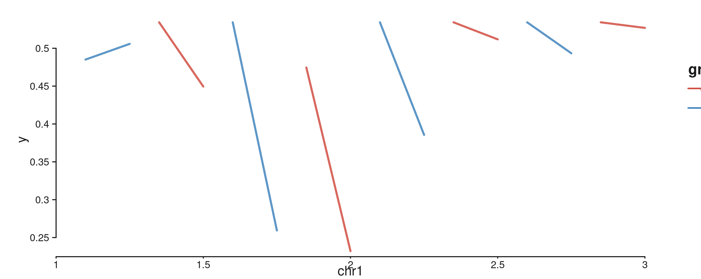
seq_curve — Bezier curve with data-space control
points
Required: x, y, x_end,
y_end. aes(curvature) sets the fractional
y-offset of the control points (default 0.3). Handy for
visualising directional relationships (a transcript splice, a read pair)
without stealing the arch slot (seq_arc) used for SV
calls.
curve_gr <- GRanges("chr1",
IRanges(start = c(1.2e6, 1.7e6, 2.3e6), width = 1),
x_end = c(1.5e6, 2.1e6, 2.7e6),
y = c(0.2, 0.3, 0.25),
y_end = c(0.5, 0.7, 0.6))
seq_plot() %|%
seq_track(data = curve_gr,
mapping = map(x = start, x_end = x_end,
y = y, y_end = y_end),
windows = win) %+%
seq_curve(aesthetics = aes(curvature = 0.5,
color = "#66800B",
linewidth = 1.4)) -> p
p$plot()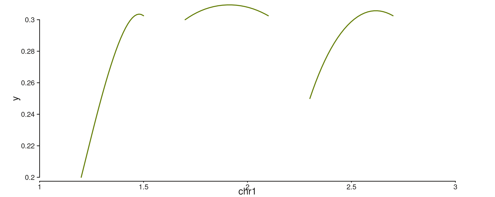
seq_path — poly-line through grouped points
Required: x, y. Optional group
splits the path into several disconnected lines. Good for plotting
per-group traces on one track.
group_xs <- seq(1.05e6, 2.95e6, length.out = 30)
path_gr <- GRanges("chr1",
IRanges(start = rep(group_xs, 3), width = 1),
y = c(sin((group_xs - 1e6) / 5e5) * 0.2 + 0.4,
cos((group_xs - 1e6) / 4e5) * 0.2 + 0.5,
((group_xs - 1e6) / 2e6) * 0.3 + 0.3),
trace = rep(c("A", "B", "C"), each = 30))
seq_plot() %|%
seq_track(data = path_gr,
mapping = map(x = start, y = y,
group = trace, color = trace),
windows = win) %+%
seq_path(aesthetics = aes(linewidth = 1.3, alpha = 0.85)) -> p
p$plot()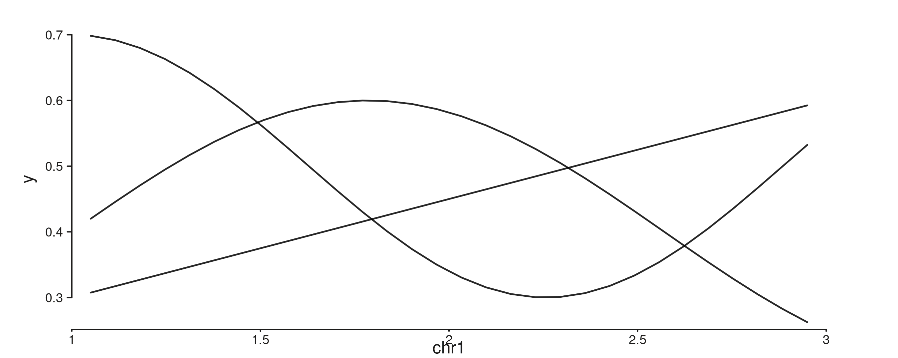
seq_poly — filled polygon(s) from vertices
Required: x, y. Optional group
partitions vertices across multiple polygons. Use for custom region
highlights and hand-shaped overlays. Below: three filled triangles, one
per gene body.
tri_starts <- c(1.20e6, 1.80e6, 2.40e6)
tri_widths <- c(2.5e5, 3.0e5, 2.0e5)
poly_gr <- GRanges("chr1",
IRanges(start = rep(tri_starts, each = 3), width = 1),
x_v = c(rbind(tri_starts,
tri_starts + tri_widths / 2,
tri_starts + tri_widths)),
y_v = rep(c(0.2, 0.8, 0.2), times = 3),
grp = rep(paste0("tri", 1:3), each = 3))
seq_plot() %|%
seq_track(data = poly_gr,
mapping = map(x = x_v, y = y_v,
group = grp, fill = grp),
windows = win) %+%
seq_poly(aesthetics = aes(color = "white", alpha = 0.8)) -> p
p$plot()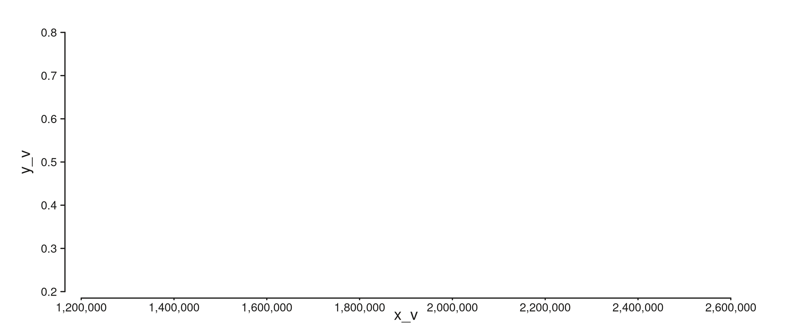
seq_area — filled area under a curve
Required: x, y. Optional
aes(baseline = ...) sets the closing y-value (default
0). Coverage curves, pileups, smoothed density fills.
area_xs <- seq(1.05e6, 2.95e6, length.out = 80)
area_gr <- GRanges("chr1", IRanges(area_xs, width = 1),
depth = 0.5 + 0.3 * sin((area_xs - 1e6) / 4e5) +
rnorm(80, 0, 0.02))
seq_plot() %|%
seq_track(data = area_gr,
mapping = map(x = start, y = depth),
windows = win) %+%
seq_area(aesthetics = aes(fill = "#4385BE",
color = "#205EA6",
alpha = 0.65,
linewidth = 0.8)) -> p
p$plot()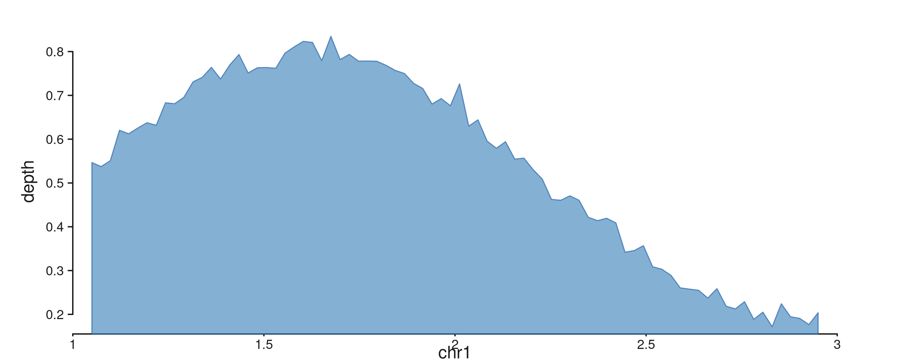
seq_text — per-observation labels
Required: x, y, label.
Optional: size, color, angle,
hjust, vjust.
text_gr <- GRanges("chr1",
IRanges(start = c(1.30e6, 1.90e6, 2.50e6), width = 1),
y_pos = c(0.75, 0.45, 0.85),
lbl = c("peak_1", "peak_2", "peak_3"))
seq_plot() %|%
seq_track(data = text_gr,
mapping = map(x = start, y = y_pos, label = lbl),
windows = win) %+%
seq_text(aesthetics = aes(fontsize = 12,
color = "#AF3029",
hjust = 0.5)) -> p
p$plot()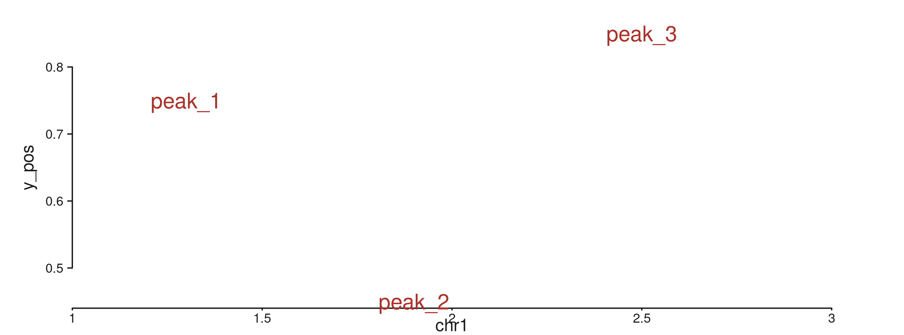
Composites
Composites chain primitives (often plus a small amount of
pre-computation) to provide higher-level idioms. Each composite inherits
from its underlying primitive and exposes a narrower, task-specific
map() vocabulary.
seq_bar — per-interval rectangles
One rectangle per observation; group stacks bars at
identical x positions.
bar_gr <- GRanges("chr1",
IRanges(start = seq(1.1e6, 2.9e6, by = 2e5), width = 8e4),
score = runif(10, 0.2, 1.0))
seq_plot() %|%
seq_track(data = bar_gr,
mapping = map(x = start, y = score),
windows = win) %+%
seq_bar(aesthetics = aes(fill = "#4385BE")) -> p
p$plot()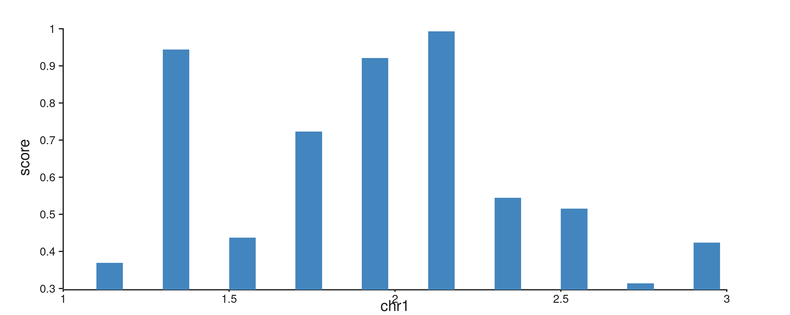
seq_ribbon — band between two y series
Required: y_min, y_max. Confidence bands,
min/max pileups, CI envelopes — anything that needs a shaded interval
per x.
ribbon_xs <- seq(1.05e6, 2.95e6, length.out = 60)
ribbon_mu <- sin((ribbon_xs - 1e6) / 3e5) * 0.3 + 0.5
ribbon_gr <- GRanges("chr1", IRanges(ribbon_xs, width = 1),
mean = ribbon_mu,
lo = ribbon_mu - 0.12,
hi = ribbon_mu + 0.12)
seq_plot() %|%
seq_track(data = ribbon_gr,
mapping = map(x = start, y_min = lo, y_max = hi),
windows = win) %+%
seq_ribbon(aesthetics = aes(fill = "#4385BE", alpha = 0.5)) -> p
p$plot()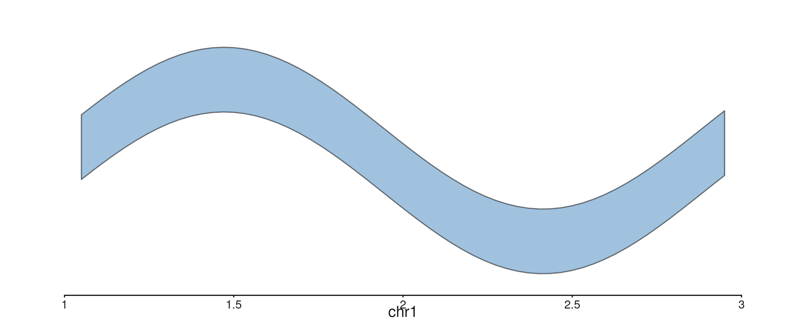
seq_density — kernel density estimate
Calls stats::density() on the resolved y
and renders the result as a filled area. Pre-computed densities should
use seq_area() directly.
dens_gr <- GRanges("chr1",
IRanges(start = seq(1e6, 3e6, length.out = 200), width = 1),
score = c(rnorm(120, mean = 0.3, sd = 0.05),
rnorm(80, mean = 0.7, sd = 0.08)))
seq_plot() %|%
seq_track(data = dens_gr,
mapping = map(x = start, y = score),
windows = win) %+%
seq_density(aesthetics = aes(fill = "#879A39", alpha = 0.7)) -> p
p$plot()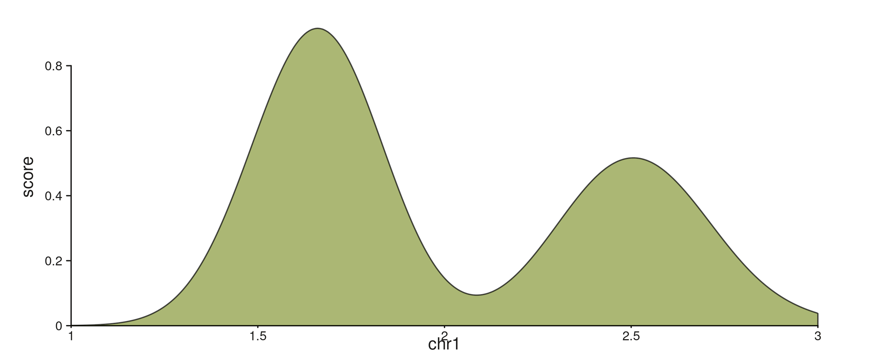
seq_tile — rectangles per interval
Flat mode: one rectangle per observation. Rotated mode
(aes(rotate = TRUE)) turns each tile into a diamond — the
standard Hi-C representation when combined with a genomic y-axis (see
the basics vignette for a full example).
tile_gr <- GRanges("chr1",
IRanges(start = seq(1.1e6, 2.9e6, by = 1e5), width = 8e4),
fill_col = sample(flexoki_palette(5), 19, replace = TRUE))
seq_plot() %|%
seq_track(data = tile_gr,
mapping = map(x = start, fill = fill_col),
windows = win) %+%
seq_tile() -> p
p$plot()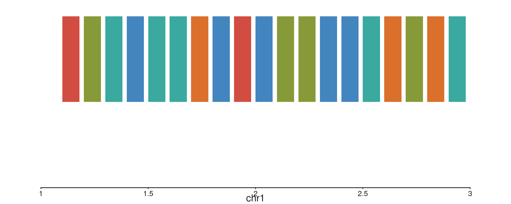
seq_lollipop — stem + point
Vertical stem from baseline (default 0) up
to y, with a point at y. Standard for sparse
discrete events (mutation impact, peak summits).
lp_gr <- GRanges("chr1",
IRanges(start = sample(seq(1.05e6, 2.95e6, by = 1e4), 15), width = 1),
impact = runif(15, 0.2, 1.0))
seq_plot() %|%
seq_track(data = lp_gr,
mapping = map(x = start, y = impact),
windows = win) %+%
seq_lollipop(aesthetics = aes(color = "#AF3029", linewidth = 1.2)) -> p
p$plot()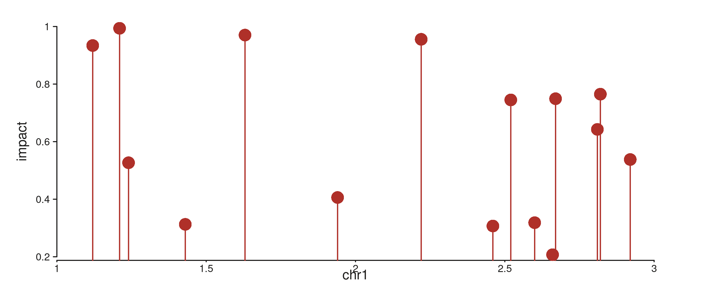
seq_gene — format-agnostic gene models
Every column reference comes through map():
group joins features into one gene, strand
orients the arrows, type distinguishes exons from UTRs,
label places the gene name, color tints each
gene.
gene_gr <- GRanges("chr1",
IRanges(
start = c(1.10e6, 1.20e6, 1.35e6, 1.50e6, 1.58e6,
1.90e6, 2.05e6, 2.18e6, 2.30e6,
2.55e6, 2.68e6, 2.80e6),
width = c( 3e4, 6e4, 4e4, 5e4, 2e4,
4e4, 8e4, 5e4, 3e4,
6e4, 3e4, 5e4)
),
gene_id = rep(c("A", "B", "C"), times = c(5, 4, 3)),
gene_name = rep(c("TP53", "MYC", "BRCA1"), times = c(5, 4, 3)),
strand_col = rep(c("+", "-", "+"), times = c(5, 4, 3)),
feature = c("UTR","exon","exon","exon","UTR",
"UTR","exon","exon","UTR",
"exon","exon","exon"),
color = c(rep("#205EA6", 5),
rep("#AF3029", 4),
rep("#66800B", 3)))
seq_plot() %|%
seq_track(data = gene_gr,
mapping = map(group = gene_id,
type = feature,
strand = strand_col,
label = gene_name,
color = color),
windows = win) %+%
seq_gene(map(group = gene_id,
type = feature,
strand = strand_col,
label = gene_name,
color = color)) -> p
p$plot()
Backbone styles
backbone_type controls the gene backbone rendering.
"arrow" (default) places chevron arrows to show strand
direction. "solid" draws a plain line;
"dashed" uses a dashed line — useful for predicted or
low-confidence models.
seq_plot() %|%
seq_track(data = gene_gr,
mapping = map(group = gene_id,
type = feature,
strand = strand_col,
label = gene_name,
color = color),
windows = win) %+%
seq_gene(map(group = gene_id,
type = feature,
strand = strand_col,
label = gene_name,
color = color),
backbone_type = "dashed") -> p
p$plot()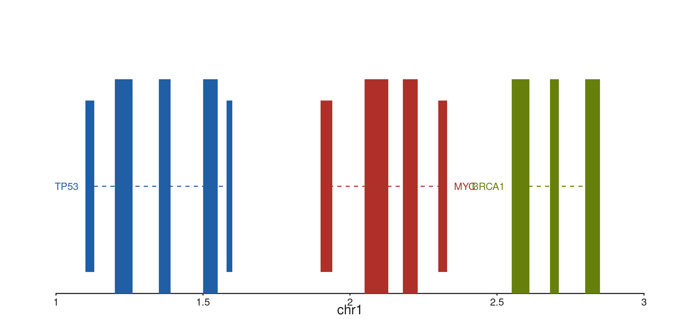
TSS start-site arrow
show_start = TRUE draws a flag arrow above the first
exon (by row order) of each gene. For genes where the annotated first
exon differs from the true TSS, pass
tss_position = list(gene_id = c(start, end)) to override
the auto-detected position per gene.
seq_plot() %|%
seq_track(data = gene_gr,
mapping = map(group = gene_id,
type = feature,
strand = strand_col,
label = gene_name,
color = color),
windows = win) %+%
seq_gene(map(group = gene_id,
type = feature,
strand = strand_col,
label = gene_name,
color = color),
show_start = TRUE) -> p
p$plot()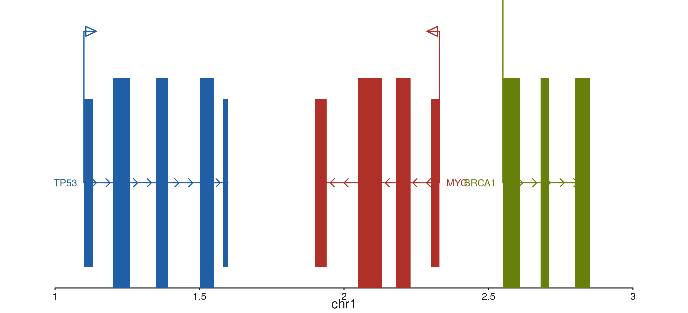
Strand separation
separate_strands = TRUE partitions the track interior
into two horizontal sub-bands: "+" strand genes at the top
and "-" strand genes at the bottom. A dashed line marks the
band boundary and each band is labelled. Silently ignored when only one
strand is present.
seq_plot() %|%
seq_track(data = gene_gr,
mapping = map(group = gene_id,
type = feature,
strand = strand_col,
label = gene_name,
color = color),
windows = win) %+%
seq_gene(map(group = gene_id,
type = feature,
strand = strand_col,
label = gene_name,
color = color),
separate_strands = TRUE) -> p
p$plot()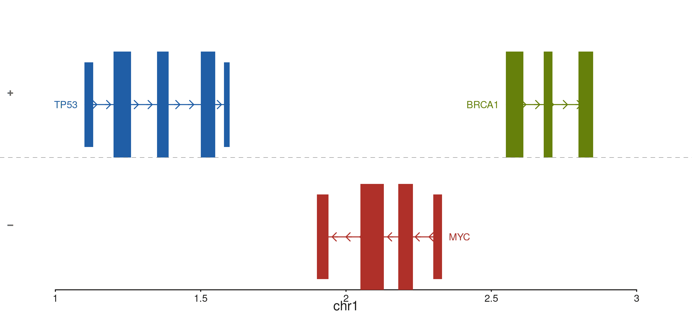
All features combined
separate_strands, show_start, and
backbone_type are independent and compose freely. Here both
are on with a solid backbone — useful when the track already conveys
directionality through the strand band layout.
seq_plot() %|%
seq_track(data = gene_gr,
mapping = map(group = gene_id,
type = feature,
strand = strand_col,
label = gene_name,
color = color),
windows = win,
track_height = 1.2) %+%
seq_gene(map(group = gene_id,
type = feature,
strand = strand_col,
label = gene_name,
color = color),
backbone_type = "solid",
show_start = TRUE,
separate_strands = TRUE) -> p
p$plot()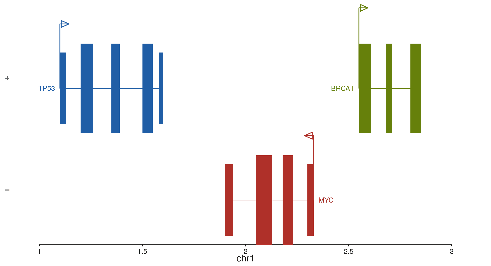
Style type
style_type selects the per-gene rendering style.
"exon" (default) is the full backbone-plus-exon-boxes view
shown above; "gene" collapses each gene to a single
chevron-shaped polygon spanning the gene extent — useful when exon
detail is not needed and screen space is tight; "point"
reduces each gene to a single filled circle at the TSS, ideal for very
dense overviews. Labels are drawn in all three modes.
seq_plot() %|%
seq_track(data = gene_gr,
mapping = map(group = gene_id,
type = feature,
strand = strand_col,
label = gene_name,
color = color),
windows = win) %+%
seq_gene(map(group = gene_id,
type = feature,
strand = strand_col,
label = gene_name,
color = color),
style_type = "exon") -> p
p$plot()
seq_plot() %|%
seq_track(data = gene_gr,
mapping = map(group = gene_id,
type = feature,
strand = strand_col,
label = gene_name,
color = color),
windows = win) %+%
seq_gene(map(group = gene_id,
type = feature,
strand = strand_col,
label = gene_name,
color = color),
style_type = "gene") -> p
p$plot()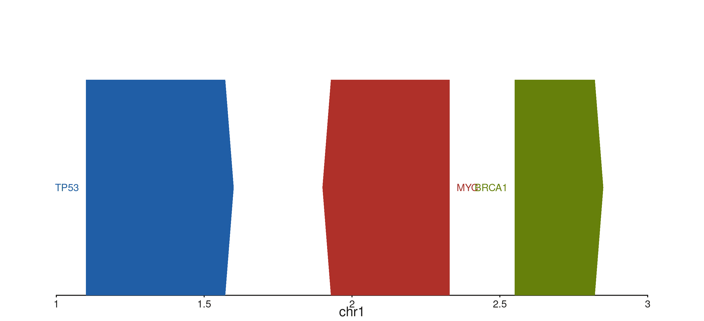
seq_plot() %|%
seq_track(data = gene_gr,
mapping = map(group = gene_id,
type = feature,
strand = strand_col,
label = gene_name,
color = color),
windows = win) %+%
seq_gene(map(group = gene_id,
type = feature,
strand = strand_col,
label = gene_name,
color = color),
style_type = "point") -> p
p$plot()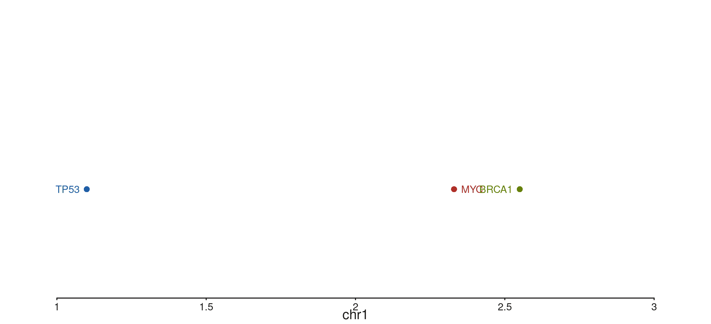
Dense dataset — tier stacking
When genes overlap, seq_gene stacks them into
non-overlapping tiers automatically. With
separate_strands = TRUE each strand band has its own tier
stack, keeping the two strands visually separated even at high gene
density.
set.seed(7)
n_genes <- 14
starts <- sort(sample(seq(1.05e6, 2.6e6, by = 5e4), n_genes))
widths <- sample(seq(5e4, 3e5, by = 2e4), n_genes, replace = TRUE)
strands <- sample(c("+", "-"), n_genes, replace = TRUE)
colors_d <- ifelse(strands == "+", "#205EA6", "#AF3029")
gids_d <- paste0("G", seq_len(n_genes))
dense_gr <- GRanges("chr1",
IRanges(start = starts, width = widths),
gene_id = gids_d,
gene_name = gids_d,
strand_col = strands,
feature = "exon",
color = colors_d)
seq_plot() %|%
seq_track(data = dense_gr,
mapping = map(group = gene_id,
type = feature,
strand = strand_col,
label = gene_name,
color = color),
windows = win,
track_height = 1.4) %+%
seq_gene(map(group = gene_id,
type = feature,
strand = strand_col,
label = gene_name,
color = color),
separate_strands = TRUE) -> p
p$plot()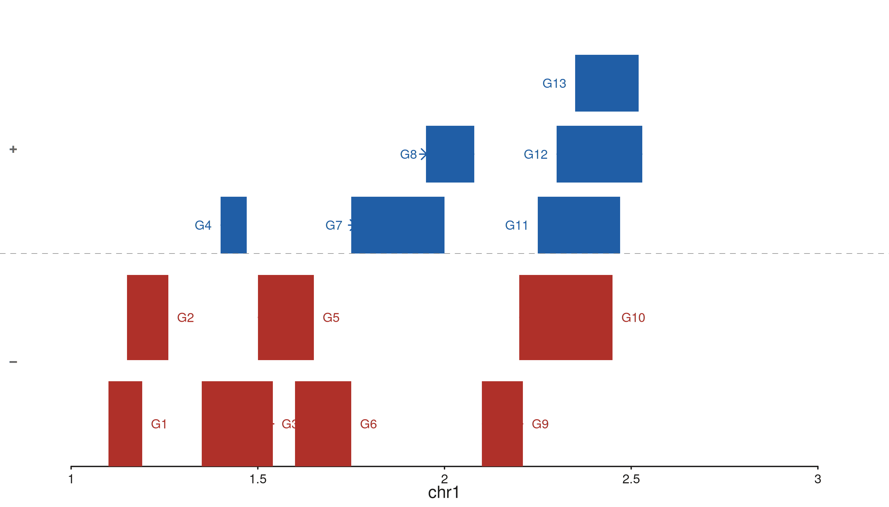
seq_sequence — IGV-style nucleotide display
seq_sequence() renders a coloured rectangle for each
nucleotide in windows up to 200 bp wide. Wider windows emit a message
and render nothing. Colours follow the UCSC standard by default:
A green, T red, C blue,
G orange/gold. Each rectangle is drawn at 99 % of its slot
width so a thin gap separates adjacent bases.
Supply the nucleotides via sequence (a character string)
or have them fetched automatically from a BSgenome package via
genome. Set show_letters = TRUE to overlay the
base letter for windows ≤ 80 bp.
seq50 <- paste(rep(c("A","T","C","G","G","A","C","T","T","A"), 5), collapse = "")
win50 <- GRanges("chr1", IRanges(1, 50))
seq_plot() %|%
seq_track(windows = win50, track_height = 0.7) %+%
seq_sequence(sequence = seq50, show_letters = TRUE) -> p
p$plot()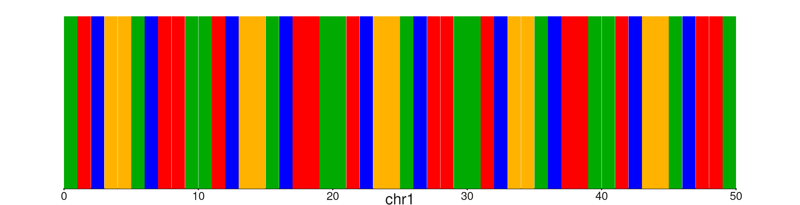
Blocks-only view for wider windows
When the window is between 80 and 200 bp the letters are suppressed
(show_letters is silently ignored) but the coloured blocks
still render. This gives a compact composition pattern view without the
clutter of overlapping labels.
seq100 <- paste(rep(c("A","T","C","G"), 25), collapse = "")
win100 <- GRanges("chr1", IRanges(1, 100))
seq_plot() %|%
seq_track(windows = win100, track_height = 0.7) %+%
seq_sequence(sequence = seq100) -> p
p$plot()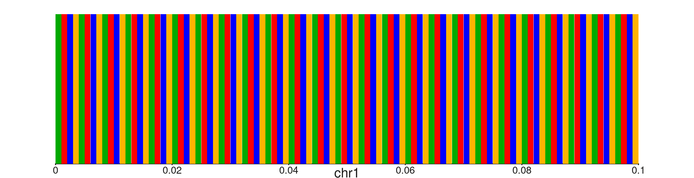
Custom colors
Pass a named character vector to colors to override any
or all of the UCSC defaults. Below, a soft pastel palette is used to
make the track less visually dominant when layered with other
elements.
pastel <- c(A = "#A8D8A8", T = "#F4A7A7", C = "#A7C4F4", G = "#FAD9A1",
N = "#DDDDDD")
seq_plot() %|%
seq_track(windows = win50, track_height = 0.7) %+%
seq_sequence(sequence = seq50, show_letters = TRUE, colors = pastel) -> p
p$plot()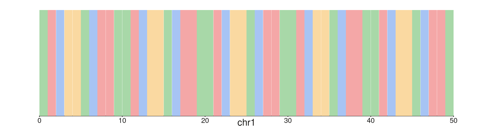
Stacked with a coverage track
rect_height reserves a fraction of the track height for
the rectangles — useful when placing seq_sequence above a
signal track. The sequence track gets a short track_height
allocation so the coverage area dominates.
win60 <- GRanges("chr1", IRanges(1, 60))
seq60 <- paste(rep(c("A","C","G","T"), 15), collapse = "")
cov_xs60 <- seq(1, 60, length.out = 60)
cov_gr60 <- GRanges("chr1", IRanges(start = cov_xs60, width = 1),
depth = 0.4 + 0.4 * sin(seq(0, 2 * pi, length.out = 60)))
seq_plot() %|%
seq_track(windows = win60, track_height = 0.55) %+%
seq_sequence(sequence = seq60,
show_letters = TRUE,
rect_height = 0.7) %__%
seq_track(data = cov_gr60,
mapping = map(x = start, y = depth),
windows = win60) %+%
seq_area(aesthetics = aes(fill = "#4385BE",
color = "#205EA6",
alpha = 0.65,
linewidth = 0.8)) -> p
p$plot()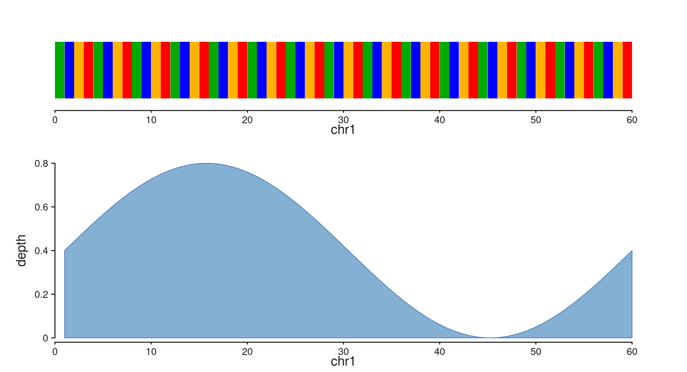
seq_ideogram — chromosome bands
seq_ideogram() consumes a GRanges of
cytogenetic bands with a gieStain mcol and draws each band
as a Giemsa-shaded rectangle. Paired acen bands collapse
into two red triangles meeting at the centromere. Load the bundled hg38
cytoband table with [load_cytobands()].
A single chromosome
create_genome_windows("chr1") expands to a GRanges
spanning the full chromosome, so the ideogram fills the panel
end-to-end.
cb <- load_cytobands()
seq_plot() %|%
seq_track(track_id = "chr1",
windows = create_genome_windows("chr1")) %+%
seq_ideogram(data = cb) -> p
p$plot()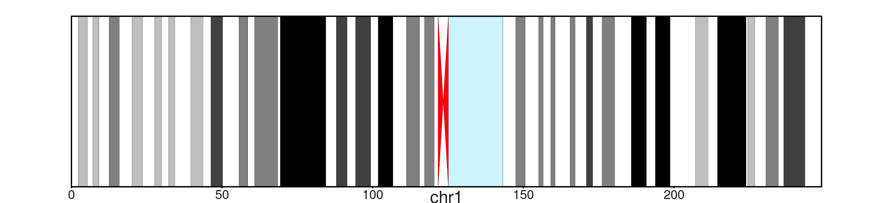
Multi-chromosome strip
A windows GRanges with multiple ranges lays each
chromosome out in its own panel inside the same track. A handful of
chromosomes stacked side-by-side gives an at-a-glance karyotype.
karyo_win <- create_genome_windows(c("chr1", "chr4", "chr7",
"chr14", "chrX"))
seq_plot() %|%
seq_track(track_id = "Karyotype",
windows = karyo_win) %+%
seq_ideogram(data = cb) -> p
p$plot()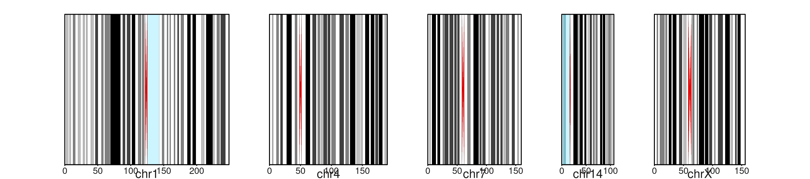
Multi-region windows
A multi-range windows GRanges lays every range out as a
separate panel inside a single track. Mappings resolve per-panel, so the
same element draws independently on each region. Below: two non-adjacent
regions on chr1 rendered as side-by-side panels.
starts_A <- seq(1.1e6, 2.9e6, length.out = 12)
starts_B <- seq(5.1e6, 6.4e6, length.out = 12)
multi_gr <- GRanges("chr1",
IRanges(start = c(starts_A, starts_B), width = 5e4),
score = runif(24, 0.2, 1.0),
region = rep(c("A", "B"), each = 12))
seq_plot() %|%
seq_track(data = multi_gr,
mapping = map(x = start, y = score, group = region),
windows = multi_win) %+%
seq_bar() -> p
p$plot()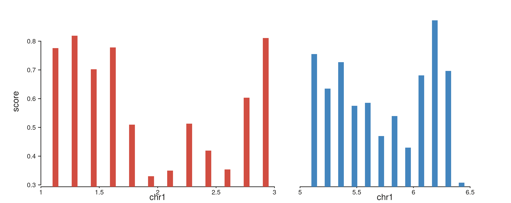
Windows can carry per-panel scale mcols to bias their
relative widths — e.g. a 1 Mb region next to a 100 kb region shown at
the same panel width so the smaller region is legible:
scaled_win <- GRanges("chr1",
IRanges(start = c(1.0e6, 5.0e6), end = c(3.0e6, 5.1e6)))
mcols(scaled_win)$scale <- c(1e-6, 1e-5)
starts_C <- seq(1.1e6, 2.9e6, length.out = 12)
starts_D <- seq(5.01e6, 5.09e6, length.out = 12)
scaled_gr <- GRanges("chr1",
IRanges(start = c(starts_C, starts_D), width = 2e4),
score = runif(24, 0.2, 1.0))
seq_plot() %|%
seq_track(data = scaled_gr,
mapping = map(x = start, y = score),
windows = scaled_win) %+%
seq_lollipop(aesthetics = aes(color = "#AF3029")) -> p
p$plot()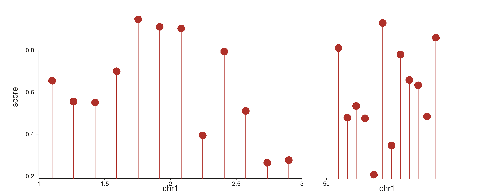
Complex layout — patchwork browser
seq_plot(layout = "...") accepts a patchwork string
where each non-# letter is a
track_id-addressed cell. The example below lays out a
six-track genome browser on two regions: an ideogram strip across the
top, a signal ribbon + density sidebar on the next row, a bar track and
a lollipop track in the middle, and gene models spanning the full width
of the bottom row.
seq_preview_layout() shows the geometry up-front — no
data required — so you can iterate the string independently of the
element code.
layout_str <- "
IIII
AAAB
CCDD
GGGG
GGGG
"
seq_preview_layout(layout = layout_str)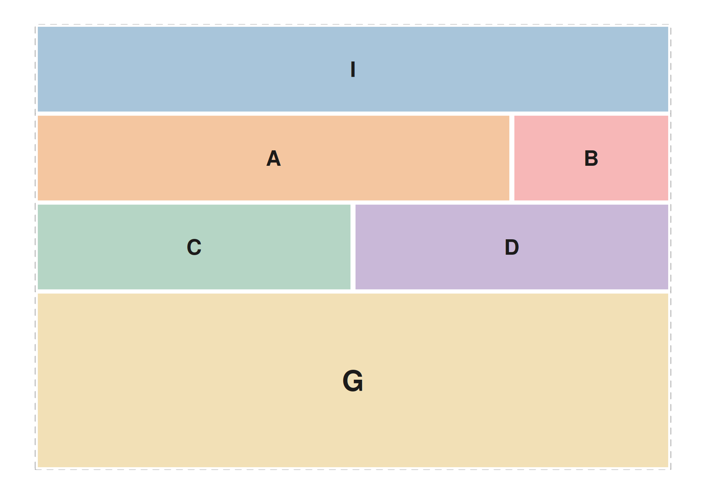
Each track’s data / mapping is declared
independently. Tracks whose track_id isn’t present in the
layout string are silently skipped, so the same operator chain can be
reused across different layouts by swapping the string.
# Shared elements + per-track datasets --------------------------------------
sig_xs <- seq(1.05e6, 2.95e6, length.out = 80)
sig_mu <- sin((sig_xs - 1e6) / 3e5) * 0.25 + 0.55
sig_gr <- GRanges("chr1", IRanges(sig_xs, width = 1),
mean = sig_mu,
lo = sig_mu - 0.1,
hi = sig_mu + 0.1)
density_gr <- GRanges("chr1",
IRanges(start = seq(1e6, 3e6, length.out = 200), width = 1),
score = c(rnorm(120, 0.3, 0.05),
rnorm(80, 0.7, 0.08)))
mut_gr <- GRanges("chr1",
IRanges(start = sample(seq(1.05e6, 2.95e6, by = 1e4), 18), width = 1),
impact = runif(18, 0.2, 1.0))
seq_plot(layout = layout_str) %+%
# I — ideogram strip
seq_track(track_id = "I",
windows = create_genome_windows("chr1:1000000-3000000")) %+%
seq_ideogram(data = cb) %+%
# A — signal ribbon
seq_track(track_id = "A",
data = sig_gr,
mapping = map(x = start, y_min = lo, y_max = hi),
windows = win) %+%
seq_ribbon(aesthetics = aes(fill = "#4385BE", alpha = 0.5)) %+%
# B — density sidebar
seq_track(track_id = "B",
data = density_gr,
mapping = map(x = start, y = score),
windows = win) %+%
seq_density(aesthetics = aes(fill = "#879A39", alpha = 0.7)) %+%
# C — bar summary
seq_track(track_id = "C",
data = bar_gr,
mapping = map(x = start, y = score),
windows = win) %+%
seq_bar(aesthetics = aes(fill = "#8B7EC8")) %+%
# D — lollipop mutation calls
seq_track(track_id = "D",
data = mut_gr,
mapping = map(x = start, y = impact),
windows = win) %+%
seq_lollipop(aesthetics = aes(color = "#AF3029", linewidth = 1.2)) %+%
# G — gene models spanning the full bottom row
seq_track(track_id = "G",
data = gene_gr,
mapping = map(group = gene_id,
type = feature,
strand = strand_col,
label = gene_name,
color = color),
windows = win) %+%
seq_gene(map(group = gene_id,
type = feature,
strand = strand_col,
label = gene_name,
color = color)) -> p
p$plot()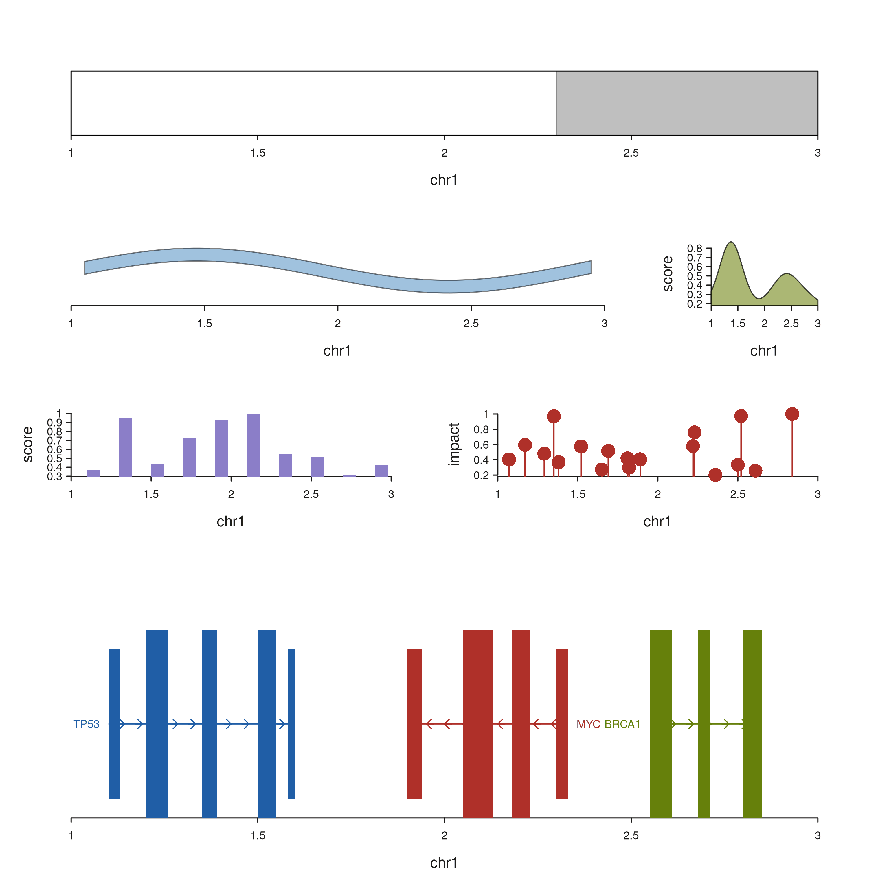
The same set of elements assembles with a positional chain — useful when the track count is modest and a patchwork string is overkill. Here a 2-row, 2-region browser pairs a coverage area and a multi-region bar track above a gene strip:
# Coverage signal spanning both regions
multi_sig_xs <- c(seq(1.05e6, 2.95e6, length.out = 60),
seq(5.05e6, 6.45e6, length.out = 50))
multi_sig_gr <- GRanges("chr1", IRanges(multi_sig_xs, width = 1),
depth = 0.5 + 0.25 * sin((multi_sig_xs - 1e6) / 4e5))
# Gene models split across the two regions
multi_gene_gr <- GRanges("chr1",
IRanges(start = c(1.20e6, 1.35e6, 1.50e6,
2.05e6, 2.18e6, 2.30e6,
5.15e6, 5.25e6, 5.38e6,
6.10e6, 6.20e6, 6.32e6),
width = rep(c(8e4, 6e4, 5e4), 4)),
gene_id = rep(c("G1", "G2", "G3", "G4"), each = 3),
gene_name = rep(c("G1", "G2", "G3", "G4"), each = 3),
strand_col = rep(c("+", "-", "+", "-"), each = 3),
feature = rep("exon", 12),
color = rep(c("#205EA6", "#AF3029", "#66800B", "#BC5215"), each = 3))
seq_plot() %|%
seq_track(track_id = "Coverage",
data = multi_sig_gr,
mapping = map(x = start, y = depth),
windows = multi_win, track_height = 1.0) %+%
seq_area(aesthetics = aes(fill = "#4385BE",
color = "#205EA6",
alpha = 0.55,
linewidth = 0.7)) %__%
seq_track(track_id = "Bars",
data = multi_gr,
mapping = map(x = start, y = score, group = region),
windows = multi_win, track_height = 0.8) %+%
seq_bar() %__%
seq_track(track_id = "Genes",
data = multi_gene_gr,
mapping = map(group = gene_id,
type = feature,
strand = strand_col,
label = gene_name,
color = color),
windows = multi_win, track_height = 1.2) %+%
seq_gene(map(group = gene_id,
type = feature,
strand = strand_col,
label = gene_name,
color = color)) -> p
p$plot()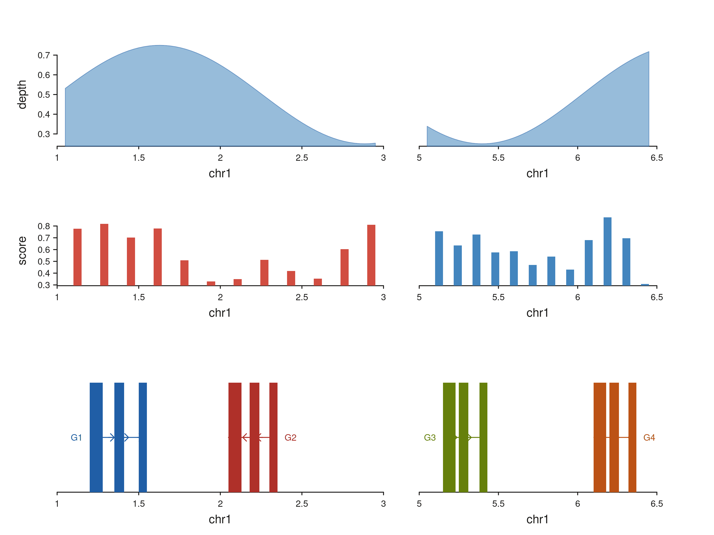
Each track’s panels align vertically across rows because they share
the same windows GRanges — so the left panel in
Coverage, Bars, and Genes all
show the same 1–3 Mb region, and the right panel shows 5–6.5 Mb.
Cross-track links (seq_string, seq_synteny,
seq_zoom) can be dropped on top of a layout like this; see
the links vignette for worked examples.